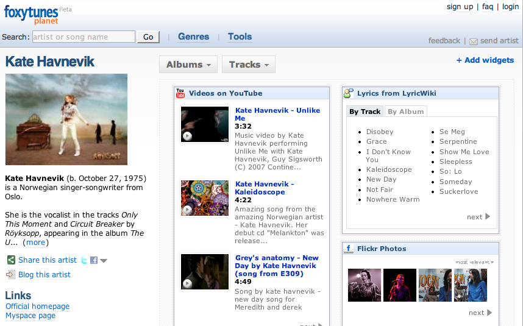

If you plan on submitting a paper or two to ISMIR, be sure to check out the new Call for Participation rules.
This year's call contains changes from previous years that might affect
your submission. In particular there is no tiered papers. All
papers will be allotted up to the full six pages in the proceedings.
Authors will be limited to three submissions (with only one submission
as the first author). Perhaps most importantly, there will be a
strong emphasis on interdisciplinary submissions - papers that span two
or more disciplines will be given preference.
Friday Feb 01, 2008
Sometime around 2:30AM this morning, we received notification that our
JavaOne proposal has been accepted. WooHoo. Now it is time to make
sure that all the work (and it is a lot of work) gets done before March
14 when the slides are due. Yikes - that's 6 weeks from now. Time to
get to going!
Thursday Jan 31, 2008
I went to Amazon during lunch to buy a book recommended by Tim Spaulding over at the LibraryThing Thingology blog:

While I was there I noticed Amazon recommending this book:
which I couldn't resist. When I added it to my cart, I was also offered this recommenation:
which again, I couldn't resist. Amazon then suggested this book:
I really like some of the things that Elias has done with Processing - so I added that one to my cart too.
At that point, I quickly hit the 'Check Out' button before I went broke. Amazon's recommender turned my $27 order into a $121 order. Multiply that by a million and it is easy to see why companies like Amazon and Netflix are investing so much in recommender systems.
There are a growing number of MIR researchers that are blogging their research. These blogs are great ways for us to peek inside a researcher's working journal (and perhaps even give them some feedback). It does get hard to keep track of all of these research blogs, so I decided I would try to make a list. I'm absolutely sure that this list is woefully incomplete, so if you know of an MIR related research blog that's not mentioned here, leave a comment and I'll add it.
MIR Research blogs:
- 120th Street - An(other) attempt at dynamic organization - Graham Poliner's research blog
- Anita Lillie's Masters Thesis - MusicBox: a new visualization of music collections
- Competence Center for Computational Culture - Stephan Bauman's blog
- DBTune Blog - Yves Raimond - Music Ontology
- Beyond Bag Of Frames - Improving Content-based Music Recommendation - by Mark - Graduate Student in the Music Technology Group at Georgia Tech
- Technology meets music meets news meets logic - Jeremy Reed's blog
- Kurtisrandom - music, people, science and technology - Kurt Jacobson's blog
- Matthias Mauch's blog
- mim's blog - Michal i Mandel has an infrequently updated weblog
- MIR Research - Elias Pampalk's MIR-oriented blog
- MusicBrainz blog - blog by MusicBrainz founder Robert Kaye
- [email protected] - Brian and Tristan's blog from the nest
- Over the Couch... - blog by Jagadeeswaran Jayaprakash from the Music Technology Group at Georgia Tech
- Parag Chordia - Assistant Professor at Georgia Tech
- self conscious white noise - the weblog of justin donaldson
- variogr.am latest - Brian Whitman's other blog
If you are an intense person, will you like intense music or
quiet, chill-out music? Is music used to moderate your emotions or to
amplify them? How are music taste and personality are
related? Researcher Greg Dunn is conducting an experiment to
answer these questions - to learn better how music taste and personality
are related - his ultimate goal is to build an adaptive music player
that is based upon your personality characteristics and the properties
of music.
Greg is looking for participants in an online experiment. The experiment requires you to complete a personality inventory online, as well as listen to various music clips and provide answers to questions regarding your opinion about these clips.
If you have about 90 minutes and want to advance our understanding of music and personality, take the study at www.traitsntunes.com

Wednesday Jan 30, 2008
With the demise of WebJay and MusicMobs - we've been without a good playlist sharing site. And with some excellent playlist sharing opportunities with sites like Spotify, it seems that the time for playlist sharing is now. To remedy this situation until a full-fledged playlist sharing site emerges, I've created a little Wiki for sharing playlists. The model couldn't be easier. Create a playlist (with Spotify, or some other music service), then post a link and a description to the wiki. That's it. Of course this won't scale more than a few dozen playlists, but it is a place to start. Check it out at: Group Mix
Update: Magnus points out that there is a site called Spotlists for sharing Spotify playlists.
I am lucky enough to be able to participate in the private beta of a next-generation music service called Spotify. As I described previously,
Spotify is the real celestial jukebox - it has a seemingly bottomless
collection of music - by every artist that I can think of (and I can
think of a lot). Today, the folks at Spotify released a new
feature: Collaborative Playlists.
With Collaborative Playlists you can give your friends a playlist that
they can not only listen to, they can add new tracks to, and any changes
they make to the playlist you see (and hear) too. Need help
making a mix for friday's party - get your friends to help. This
is a pretty neat idea, and one that I've not seen before. What really
makes this work is the fact that all Spotify users have access to the
same huge music catalog - this makes sharing and collaborating on
playlists not only possible, but dead simple. To add a song to the
playlist, just right click on the song and click 'add to playlist'. No
more digging through music collections to see what songs you have in
common with your friends, no more searching the 'net to find the set of
tracks that your friends are listening to. The music is all right
there.
Spotify's collaborative playlisting feature just highlights how, when we all have access to the celestial jukebox, there will be so many ways for people to do things with their music that has been hard to do so far. Collaborative playlisting is just the tip of the proverbial iceberg.
Still, the Spotify collaborative playlisting could perhaps be improved a bit. Right now, there doesn't seem to be any way for a playlist editor to add any description to the playlist. It'd be nice if when I create a collaborative playlist that I could include a bit of text that describes what the playlist is about - to give future editors a bit of guidance about what goes in the playlist. Similarly, when someone adds a song to a playlist they should be given the option to explain why they've added that song.
Right now, I suspect that the world of
Spotify users is still rather small, so the opportunities for
collaborating on playlists are small. But let me start a
collaborative playlist to see what happens. For this playlist,
find a song that is slightly more happy than the current last song on
the playlist and add the song to the end. I'll
start with the very unhappy 'hurt' - as covered by Johnny Cash.
Here's the playlist :Make Me Happy.
Have at it. (Oh, if you are not a Spotify user, but would like to play
along, I'll post the contents of the playlist here periodically.
If you have suggestions to add - just post a comment and I will add it.)
Update #1: Four songs so far:
- Hurt - Johnny Cash
- Rape Me - Mirvana
- Miss Li - Miss Li
- Brimful of Asha (Cornershop FBS Remix) - Fatboy Slim
Remember - the goal is to make a playlist that will seemlessly pull us from the very depressing 'Hurt' - into happy or even giddy territory. Feel free to insert or reorder tracks as necessary
Update #2: 20 songs and counting - we seem to be having no trouble finding the happy/giddy songs .. but the songs that cross the border on the valence scale seem to be missing. Current songs:
- Hurt - Johnny Cash
- Ain't No Sunshine - Woven Hand
- Rape Me - Nirvana
- This Place is a prison - The Postal Service
- Smile - Lily Allen
- Miss Li - Miss Li
- Run to the Hills - Hellsongs
- Giddy Up! - The Hives
- Brimful of Asha - Fatboy Slim
- Tomoko - Hafdis Huld
- Fly Around My Pretty Little Miss - Built to Spill
- Dancing in the Moonligh - Toploader
- Walking on Sunshine - Katrina and the waves
- Duke's Travels - Genesis
- Dashboard - Modest Mouse
- Dancing in the Streets - Martha and the Vandellas
- I just Can't get Enough - Nouvelle Vague
- Shake Me Baby - Junior Senior
- finally - Ce Ce Peniston
- Beautiful Day - U2
- I want you back - the jackson 5
- I'm so excited - the pointer sisters
- Always look on the bright side of life - Monty Python
Tuesday Jan 29, 2008
t-shirt seen at MIDEM (thx Andreas)
Foxytunes planet is music information aggregator. FoxyTunes Planet collects information from all sorts of web sources and displays them on a single page. They scrape lots of sources including: Wikipedia, Amazon, Last.fm, flickr, LyricWiki, HypeMachine, Youtube and lots more. You can customize your layout and add/remove various sources.
Foxytunes Planet tries hard to find the right info - but sometimes it misses the mark. Search for the band 'the the' and the flickr and youtube videos found are not related at all. Search for the band 'Blur' and the flickr images are ... well blurry.
Foxytunes Planet seems to play a bit fast and loose with other people's data - they don't restrict themselves to creative commons licensed photos from flickr for instance - lots of images shown are in the 'all rights reserved category'. They are also using data from sites like Last.Fm that have a policy of non-commercial use only. If FoxyTunes Planet is making money on Amazon or iTunes referrals then it seems to me that they would be in violation of these terms.

Saturday Jan 26, 2008
One of the highlights of NEMISIG was the unveiling of the new EchoNest music analysis web service.
You give the web service an MP3 file, and it returns a big wad of
XML filled with all sorts of interesting things that can be derived
from the music. For instance, if you wanted to fill out that
Beats-per-minute field for each track in iTunes, you could upload your
tracks to the web service and extract the <tempo> field from the
returned XML. This is a pretty cool thing, and a great idea. (And a
great way for the EchoNest to collect lots of data (not that they need
it)).
This is one of the first things we've seen to come out of the nest - I can't wait to see what comes out next.
Friday Jan 25, 2008
Karla Starr as an excellent piece in the Seattle Weekly called: 22,000 Songs and Nothing to Listen To.
Karla tries to figure what impact having so many music choices will
have. She's done her leg work - lots of commentary by people who
think about this stuff a lot. Here's a choice quote by Dan
Levitin: "the average 14-year-old can hear more
music in a month than someone would have heard in an entire lifetime
just 300 years ago"
Thursday Jan 24, 2008
Last.fm has been getting a whole lotta love about yesterday's announcement that they would offer free on-demand music streaming. Commenters on RJ's blog post seemed downright giddy. Multiple Digg front page stories, the blog-o-sphere all a twitter. People seem genuinely excited about free on-demand tracks at Last.fm.
Which may seem to be a bit puzzling. Napster has offered the exact same free, web-based, on-demand music listening. From the Napster FAQ: You can search our catalog of 3 million songs and stream songs up to 3 times each for FREE. After the 3rd free play of any single track, you can either purchase the track or become a Napster subscriber. As a subscriber, you can download an unlimited number of full-length songs to your PC. As a Napster To Go subscriber you can transfer those tracks to your compatible portable player without paying per track.
Compare that to the Last.fm announcement: Each track can be played up to 3 times for free before a notice appears telling you about our upcoming subscription service. The soon-to-be announced subscription service will give you unlimited plays and some other useful things.
It's the same deal. So why are we so excited about Last.fm offering something that has been available for years? For me the difference is clear. Last.fm is all about music discovery. They have many (perhaps too many!) ways to help me find new music. They have the traditional charts that show me what is popular. They recommend music based upon my listening behavior (I don't have to manually rate tracks). They do clever things with the massive amounts of social tags they've collected. They will let me explore my friends listening to help me find new music. They make lots of their data available so others can try to build new things around the Last.fm listening experience.
To me, Last.fm is like a big music club, where there are lots of people who are really interested in music, and where there are lots of toys to play with. And now this music club is giving us a new toy .... on-demand music. Napster, on the other hand, is like a big hardware store. They probably have all of the stuff that I'm looking for, but it is probably not a place that I'd want to hang out.
Music pundits have been
proclaiming that music subscription services are dead - but I think they
are wrong. It is just that these subscription services can't keep
their subscribers because they don't know how to keep the subscribers
happy. You can't just throw 3 million songs onto the net and leave
your subscribers to find the music. If you want to keep your
subscribers, you've got to keep them happy - and the way to do that is
to surround your millions of tracks with ways to help people explore all
that music. Last.fm knows how to do this. That's why I am
excited about Last.fm.
Wednesday Jan 23, 2008
Just last week, I predicted that 2008 would be the year of free music. I wrote:
In 2008, this is all going to change. We are now starting to see the next generation of music apps hit the web that no longer are beholden to the rules of Internet radio. These music apps allow you to play any song you want, at anytime for free. 2008 will be the year of the Celestial Jukebox - at least if you are sitting at your computer, You will be able to listen to virtually any song that you want, on demand. The only time you will need to pay for music is if you want to listen to it on your iPod or your living room stereo.
Today, Last.fm has rolled out their on-demand service. RJ describes this in his blog (my emphasis added):
Full-length tracks are now available in the US, UK, and Germany, and we’re hard at work broadening our coverage into other countries. During this initial public beta period, each track can be played up to 3 times for free before a notice appears telling you about our upcoming subscription service. The soon-to-be announced subscription service will give you unlimited plays and some other useful things. We’re also working on bringing full-length tracks to the desktop client and beyond.
This is a big deal. Big for last.fm and big for music listeners. Free on-demand listening, coupled with last.fm's huge social data and listener-base will let last.fm and its listeners do all sorts of interesting things. Last.fm is also opening the door for new artists, letting them upload music and earning money each time their songs are played on last.fm.
Last.fm's offering is not 100% free
though. It is like Napster's offering - 3 free plays (Napster
offered 5) of any particular song. After the 3rd play you need to
be a subscriber before you can listen again to that song.
This model works for music discovery and really helps making playlists
shareable - but it won't replace your iTunes music collection. If
you really like a song, you'll have to buy it or become a
subscriber. I'm interested to see how a last.fm subscription
service will work - any subscription service that doesn't work
with the iPod is going to have a tough time . (Some details on
the last.fm unlimited listening subscription are here).
I'm
excited to see where last.fm goes with this. They have lots of smart
people who are working hard to turn last.fm into the celestial box.
Last.fm really will become the last fm radio station you'll ever need.
2008 is the year of free music on the desktop ... 2009 will be the year
of free music everywhere. The celestial jukebox is here!
Tuesday Jan 22, 2008
Next week I am going to visit the University of Montreal to give a talk at Professor Eck's 'Music and Machine Learning' course. Doug asked me to suggest a paper or two to serve as background reading. Instead, I'll describe the prerequisites right here in this blog entry.
I'm going to talk about music discovery and recommendation. Since the course is about music and machine learning, naturally I'll talk about how we can use some of the automated techniques such as music classification and music similarity to improve recommendations. But before we get there I want to put the machine learning bits into a larger framework of music recommendation and discovery. To fill out some of this background and to get you thinking about music recommendation, you have two pre-class assignments:
The first assignment is to visit and use the following music recommendation/discovery sites:
- Last.fm
- Pandora
- iLike.com
- Ishkur's Guide to Electronic Music
- Musicovery
- Owl Music search
- iTunes
- Hype Machine
- Radio Paradise
(Update: Note that Pandora might not work in Canada, GlobalPandora might work, but then again it might not)
For each site think about:
- What technique does the site use to help you discover music?
- How far into the long tail does the site get you?
- How deep is the catalog of music?
- How central is music recommendation and discovery to the site?
The
second assignment is to post a comment to this blog entry that
describes how you made your most recent music discovery.
I'll post the description of my most recent discovery to kick things
off.
(note, if you are not taking the class, but just happen to be reading this blog, you don't have to do the homework, but you can if you want).
Update: I've posted the slides for the talk.
Sunday Jan 20, 2008
tagurself is a widget that displays your interests as a tag cloud. You give tagurself a URL to an APML, RSS, blog or web page and it will give you a web 2.0 tag cloud. It works especially well with APML - for example here's the tagurself cloud based upon my last.fm music interests (using the tastebroker to generate my listening APML).
This blog copyright 2010 by plamere